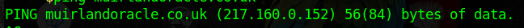
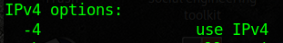
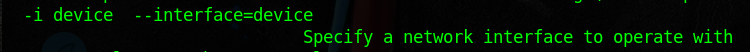
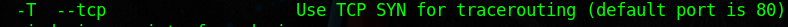
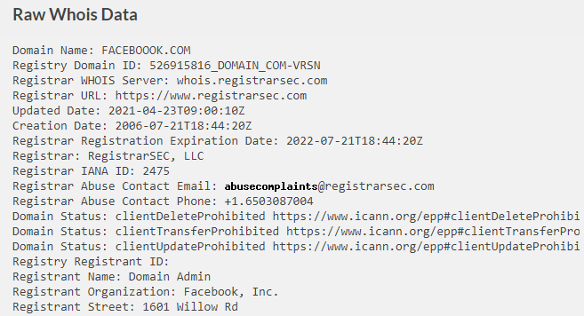
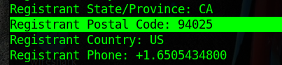
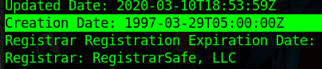
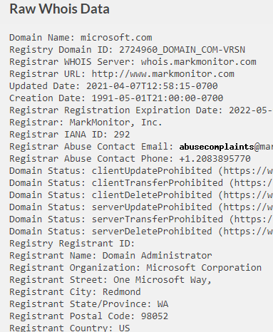
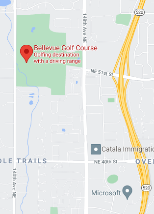

Uma poderosa ferramenta para scan ou varredura de redes, de codigo aberto.
Introdução Redes

Tarefa 1 Introdução
Não precisa resposta
Tarefa 2 The OSI Model
Perguntas e respostas
Qual camada Você escolheria para enviar dados: TCP ou UDP?
4
Camada 4 Transporte (Transport)
Os dois protocolos mais usados nessa camada são TCP(protocolo de control de transmissão) e UDP (Protocolo de datagramas do usuario)
Qual camada checa os pacotes recebidos para ter certeza que não foram corrompidos?
2
Camada 2 Data Link
Uma das funções importantes quando recebe dados nessa camada,é checar os dados recebidos para ter certeza que não foram corrompidos durante a transmissão, que pode acontecer quando os dados são enviados da camada 1: camada física
Em qual camada poderia os dados serem formatados preparando-os para transmiti-los?
2
Camada 2 Data Link
Nesta camada foca-se na transmissão de endereço físico, e uma das tarefas é apresentar os dados em formatos apropriados para transmissão.
Qual camada é capas de transmitir e receber dados?
1
Camada 1 Física (Physical)
Uma camada de baixo nível, logo no hardware do computador, é onde os pulsos eletricos que são feito pelos dados transmitidos pela rede são enviados e recebidos.
Qual camada Encrypta, comprime ou transforma os dados iniciais para criar um padrão?
6
Camada 6 Apresentação (Presentation)
Nesta camada recebe dados da camada de Aplicação (Applicaction) que transforma os dados num formato padrão.
Qual camada acompanha a comunicação entre o Servidor (host) e o cliente?
5
Camada Sessão(Session)
Nesta camada recebe dados correctamente formatados da camada de 'Presentação' e procura estabelecer uma conexão com os outros computadores através da rede.Graças a essa camada que é possível fazer varias requisições sem misturar.
Qual camada aceita pedidos de comunicação de aplicativos?
7
Camada Aplicação(Application)
Segundo modelo OSI, nesta camada tem opções de rede para programas que estão funcionando num computador, oferecendo-os uma interface para transmitir dados.
Qual camada trabalha com 'endereçamento lógico'?
3
Camada Rede (Network)
Responsável por encontrar o destino do pedido ou requisição. É usado para ordenar a rede apropriadamente. Atualmente a forma mais comum de endereço lógico é o formato IPV4 (endereço comum dos roteadores)
Quando envia-se dados por TCP, Como você chamaria o 'Tamanho de um bite' ("bite-sized") que são partes de dados?
Segmentos
Camada Transporte
Esta camada divide a transmissão em partes, usando TCP são chamados de 'segmentos' e em UDP são chamados de 'Datagramas'.
Com qual camada o protocolo FTP se comunica?
7
Camada Aplicação
fornece opções de rede. FTP (protocolo de transferência de arquivos) é considerado um protocolo de Aplicação que movimenta arquivos entre um sistema local e remoto.
Qual protocolo de transporte é ou melhor à ser utilizado para transmitir uma "live"?
UDP
Com UDP
Os pacotes de dados tem como propósito rapidez ao invés de precisão. Com TCP acontece ao contrário, apropriado para envio de arquivos, ou carregar Sites; onde nenhum dado pode se perder no caminho.
Tarefa 3 Encapsulation
Perguntas e respostas

Como tem que referir à camada 2 do processo de encapsulamento (com o modelo OSI)?
Frames
Obs.Imagem
Como refere-se aos dados na camada 4 do processo de encapsulamento, se o protocolo UDP fosse selicionado?
Datagrams
Qual processo realizaria um computador em uma mensagem recebida?
De-encapsulation
No estagio 7
Quando uma mensagem é recebida (mensagem encapsulada) por um segundo computador, este reverte o processo até atingir a camada de "Aplicação" retirando a informação.
Qual é a camada do modelo OSI que adiciona um 'trailer' durante a encapsulação?
Data link
O processo de Encapsulamento
Quando o pacote (packet) atravessa o camada Data Link este se transforma em "Frame" e quando este atravessava a camada da Rede o 'Frame' foi divido em bits.
O encapsulamento adiciona uma camada de segurança? Aye/Nay?
Aye
O processo encapsulamento e desencapsulamento é muito importante, porque fornece um método de envio 'padrão'. Independente da fabricação, o sistema operativo ou outros fatores.
Tarefa 4 O Modelo TCP/IP
Perguntas e respostas
Qual modelo foi Introduzido primeiro, OSI ou TCP/IP?
TCP/IP
O modelo TCP/IP
É similar ao modelo OSI, e tem alguns anos na frente, e serve como base para as redes na realidade de hoje.
Qual camada do modelo TCP/IP cobre a funcionalidade da camada de Transporte do modelo OSI? (nome completo)
Transport
O modelos TCP/IP e OSI
são diferenetes, sendo que OSI tem 7 camadas e TCP/IP tem 4 camadas.
Qual camada do modelo TCP/IP cobre a funcionalidade da camada de 'Sessão' do modelo OSI? (nome completo)
Application
No modelo TCP/IP
A camada de "Aplicação" (application), representa o equivalente de 3 camadas no modelo OSI (Aplication,Presentation, Session).
A camada de Interface de Rede do modelo TCP/IP cobre a funcionalidade de duas camadas no modelo OSI, a qual é Data link e ...?
Physical
A camada Física (Physical)
é a primeira camada, que está logo no hardware do computador.
Qual camada do modelo TCP/IP trabalha com a funcionalidade da camada de "Rede" do OSI?
Internet
A Camada Internet
do modelo TCP/IP é a responsável por encontrar o destino do seu pedido
(ex. facebook.com, google.com,etc) .
Que tipo de protocolo é TCP?
Connection-based
Connection-based ou baseada-na-conexão
significa que antes que você envie dados usando TCP, o protocolo primeiro estabelece uma conexão entre os computadores (ex. seu computador e o servidor do google) para depois enviar os dados, mas este protocolo faz 3 tipos de conexão antes, para se garantir que está conectado mesmo.
O que significa SYN?
Synchronise
Synchronise ou sincronização
É a primeira etapa da verificação de conexão entre os computadores.
Qual é a SEGUNDA etapa das 3 etapas (3handshake)?
SYN/ACK
Para ter certeza da conexão o Servidor(o segundo computador)
responde com o mesmo pacote de dados que foi enviado na primeira etapa adicionando um outro pacote (ACK) para após receber de volta e ter certeza que agora é possível se conectar..
Qual a abreviação para o segmento "Acknowledgement" na terceira etapa de conexão? (3-way-handshake)
ACK
Nesta Terceira etapa
O servidor recebe do cliente o pacote enviado na segunda etapa e agora sim garantir a conexão e envio de dados. (por isso quando vai procurar um site, ele demora um pouquinho para se conectar, e mostra uma imagem ou um icone "carregando")
Tarefa 5 Net tools: Ping
Perguntas e respostas
Qual comando é usado para fazer um ping ao site bbc.co.uk?
ping bbc.co.uk
Para fazer um PING
que é nada mais que verificar se está conectado ou não, o comando é "ping [alvo]"
Faça um ping no "muirlandoracle.co.uk" Qual é endereço IPV4?
217.160.0.152

Qual "switch" (mudança) permite mudar o intervalo de enviar um pedido de ping?
-i
Qual "switch" (mudança) permite restringir a requisição para IPV4?
-4

Qual "switch" permite ter mais informação (verbose)?
-v
Verbose
Esta presente em quanse todas as ferramentas, serve para visualizar o que acontece no segundo plano.
Tarefa 6 Net tools: Traceroute
Perguntas e respostas
Traceroute faz um seguimento, do seu dispositivo até o servidor (ex:google.com), e mostra todos os "caminhos" ex: o endereço do seu dispositivo, endereço do seu proveedor de internet,endereço do servidor do estado, até chegar no servidor do Google.
Use traceroute em tryhackme.com
Não precisa de resposta
Qual "switch"(mudança) pode-se usar para especificar uma interface enquando usa Traceroute?
-i
traceroute --help (no terminal)

Qual "switch" é usado para TCP SYN request quando se faz seguimento da rota?
-T

Qual camada do modelo TCP/IP fará mapeamento por padrão (Window)?
Internet
Que é equivalente ao modelo OSI
A camada da Rede.
Tarefa 7 Net tools: WHOIS
Perguntas e respostas
Realize uma busca 'whois' no facebook.com
Não precisa resposta

Qual é codigo do registro postal do Facebook.com?
94025

Quando foi o dominio Facebook.com registrado?
29/03/1997

Realize um whois em microsoft.com?
Não precisa resposta

Qual a cidade em que se registrou?
Redmond
Qual é o nome do campo de Golfe perto do endereço de registro para microsoft.com?
Bellevue Golf Course

Qual é o E-mail Tech (técnico) da microsoft.com?
msnhst@microsoft.com
Tarefa 8 Networking tools: Dig
Perguntas e respostas
Quando você quere acessar um site, a primeira coisa que o seu computador faz, é checar a memória caché para ver se já está salvo o endereço, se não estiver no caché, seu computador envia um pedido a um servidor Recursivo "recursive DNS", é tipo vai no servidor do seu provedor de internet (ISP) e verifica o caché, se não estiver, o pedido vai para um servidor Root,antes do 2004 tinha-se 13 servidores Root no mundo, hoje tem muito mais. Dos servidores Root volta para os servidores TLD (.br/.bo/.uk) do respetivo país, após isso vai para os servidores Autoritativos, onde se encontra o registro da pagina que você procura e ele permite a conexão com o servidor do site, tudo isso em questão de mili-segundos.
Qual é o primeiro tipo de servidor DNS que o seu computador consulta quando você procura por um dominio?
Recursive
Que tipo de servidor DNS contém o registro de um dominio especifico (ex: .com/ .com.br)?
Top-Level Domain
Onde o primeiro lugar à ser verificado na procura do endereço do dominio?
Local Cache
No seu proprio computador ou dispositivo
O google funciona em 2 servidores DNS. Um deles tem IP 8.8.8.8 qual é o endereço do outro?
8.8.4.4
Se uma consulta DNS tem um TTL de 24 horas, qual o número que a consulta DIG mostrará?
86400
TTL (Time To Live)
Quando seu computador faz uma consulta por o nome de um dominio, este salva o resultado no caché, e mostra por quantos segundos tem validez, então 24 horas tem 86400 segundos. (60*60*24)
Tarefa 9
Não precisa resposta